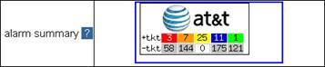

For BusinessDirect® users, alarm summary will be shown on their landing page. The customer icons displayed on the landing page vary based on account settings.

Figure 2.3 – Alarm Summary
The alarm summary icon is shown in a table to provide an easy understanding of the customer’s current open alarms status. The alarm summary categories can be set in Preference. Here we introduce an example depicting the default setting. In the first row, ‘+tkt’, indicates ticketed alarms for different alarm levels; in the second row, ‘-tkt’, indicates unticketed alarms, which are those alarms that have not been assigned as ticketed alarms. Please note, the total alarm number is the sum of ticketed alarms and unticketed alarms. For example, in Figure 2.3, there are 61 critical alarms (in red color) generated for AT&T. Three (3) alarms were assigned as ticketed, but 58 were not assigned as tickets.
The specific alarm colors are discussed in Alarm Colors.